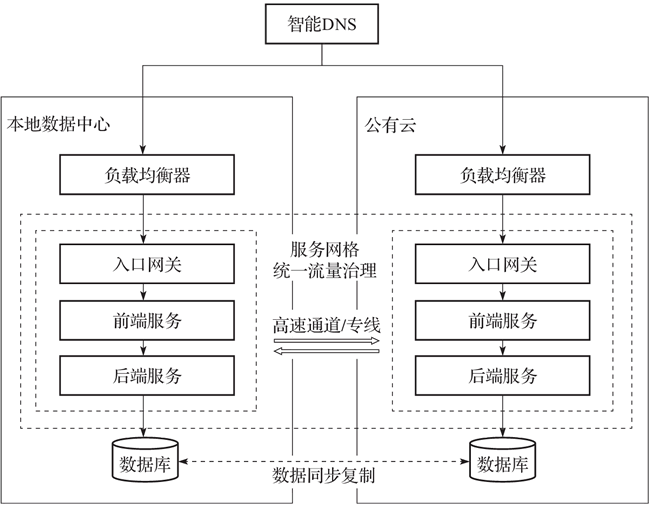
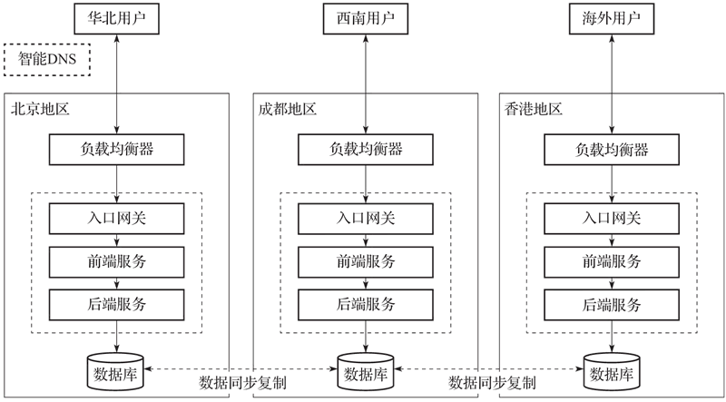

首页 > 编程笔记
多云和混合云介绍（超级详细）
本节主要介绍多云/混合云云架构的概念以及企业用户需要构建多云/混合云云架构的原因。
有很大一部分企业基于降低技术开发和运维成本、享受随时随地的即时服务等原因，选择将自己的业务部署在云端；还有一部分企业出于数据主权和安全隐私方面的考虑，选择在内部数据中心搭建专有云平台；而对公有云和专有云都有需求的企业用户，则选择搭建混合云架构；除此之外，一些企业为了满足安全合规、成本优化、扩大地域覆盖范围以及避免云厂商绑定等需求，会选择多个云供应商提供服务。
多云和混合云并不是一个新概念，而且它们之间还很容易混淆，有的人认为多云是混合云的一种，有的人认为这两个词可以互换，还有人认为它们完全不相关。
目前主流的定义是使用了超过一家云服务提供商的服务，就属于多云云架构，比如企业用户同时使用阿里云和 AWS 提供的云服务。同时使用了公有云和专有云服务的场景，属于混合云架构，这里的专有云可以是自建的，也可以是云厂商提供的。
按照以上定义，如果一个企业用户既使用了云厂商 A 提供的公有云服务，又使用了云厂商 B 提供的专有云服务，那么这种场景既符合多云的定义，又符合混合云的定义，就是典型的多云/混合云云架构。
一种更复杂的场景是，企业用户既使用了云厂商 A 和 B 的公有云服务，又使用了自建的专有云服务，那么这也是一种典型的多云/混合云云架构。
使用多云/混合云方案可以保证企业用户同时具有 A、B 两套方案可供选择和切换，最大限度地保证了业务稳定性。
以地域覆盖面的差异性为例，某企业用户通常采购云厂商 A 提供的服务，但在某个特定的区域内，云厂商 B 提供的服务在访问延迟上更优。如果企业用户在此区域有重要客户且对云服务的访问延迟有较高要求，则企业用户会选择将此区域的业务部署在云厂商 B 提供的云服务上，其他业务继续部署在云厂商 A 提供的云服务上。
此外，多云/混合云云架构也可以为企业用户提供更多与云厂商议价的空间。
在这种不同基础设施、不同能力特性以及不同 API 接口的基础上构建多云/混合云方案，一方面需要云厂商耗费大量精力在适配和整合云平台的能力上；另一方面，用户在这种架构下也无法真正按需切换云服务提供商，反而是另一种形式的绑定。传统多云/混合云的种种缺陷，导致这种云架构无法形成标准化的生态体系，也是一直以来我们无法针对这种云架构构建统一管理、统一交付的原因。
Kubernetes 的出现让多云/混合云云架构进入 2.0 时代，Kubernetes 的多项特性及相关生态体系为多云/混合云的标准化提供了可能性。
以 Kubernetes 为代表的云原生技术屏蔽了基础设施的差异性，目前各个云厂商以及大量的数据中心都已经落地这些技术，使得应用“一次定义，到处部署”成为可能。
Kubernetes 标准化、声明式的 API，简化了应用的部署，让应用交付变得越来越标准化和统一化，支持在不同的云上使用相同的方式描述和编排应用。
网格服务技术可以跨越多个 Kubernetes 集群，实现统一的流量管理和服务治理，使得多云/混合云云架构下的应用服务统一到一个控制平面进行管理。
在云原生时代，以 Kubernetes 为代表的云原生技术推动了以应用为中心的多云/混合云云架构的发展，Kubernetes 已经成为企业多云管理的事实基础。
从基础设施层面讲，各个云厂商的 IaaS 产品基本都提供了等级协议（Service Level Agreement，SLA），规定其服务可用性等级指标及赔偿方案，能最大限度地保证用户数据完整性，提供容错能力和快速恢复能力。
数据完整性是指云厂商能够保护客户生产数据的精确性和可靠性。容错能力是指云厂商能够及时检测到服务器侧的故障并自动采取补救措施，保证用户业务不受影响。快速恢复是指在发生不可预期的故障时，能够快速且全面地恢复服务的能力。用户可以选择使用这些产品化能力，以最低的成本提升业务应用的高可用性。
从基础设施服务和 Kubernetes 容器平台这两个维度看，用户可以低成本搭建一个高可用应用业务架构，但是不管上述服务和平台的设计和构建如何全面，都会遇到不可避免的突发事件，这不是会不会发生问题，而是什么时候发生问题。
因此，对于容灾能力要求更高的业务，就需要通过异地多活这样的地域级容灾能力来实现。用户可以在单一云厂商的不同区域搭建多个集群，也可以选择在不同云厂商的不同区域搭建多个集群，或者分别在线下 IDC 和线上云厂商的不同区域搭建集群，实现业务应用的异地多活部署。
下图展示了混合云场景下 IDC 内的容器集群和公有云上容器集群 Active-Active 的部署。在异地多活架构下，应用的业务负载同时部署在多个集群上，然后使用一个全局的 DNS 服务将请求转发至对应的后端集群，当其中一个集群发生故障，无法处理请求时，DNS 服务会自动处理并转发请求到健康的集群上。
在这种场景下，我们可以选择在多个地区分别部署集群，通过智能 DNS 解析将用户请求转发至距离最近的集群进行处理，最大限度地减少网络带来的延迟。图 2 中，某应用服务分别部署于北京、成都、香港 3 个地区的 Kubernetes 集群中，华北地区的用户请求会被智能解析到北京的 Kubernetes 集群上，西南地区的用户请求会被智能解析到成都的 Kubernetes 集群上，海外的用户请求则会被智能解析到香港的 Kubernetes 集群上，这样可以最大限度地减少地理距离带来的网络延迟，为各地用户带来一致的服务体验。
集群有可能因为磁盘、网络等故障导致无法处理请求，使用多个集群可以将故障限制和隔离在某个集群中，避免引起更大的连锁反应。
将不同的业务部署在不同的 Kubernetes 集群中，可以在物理层面实现业务的彻底隔离，安全性和可靠性均高于使用命名空间进行隔离。例如企业不同部门部署各自独立的集群、使用多个集群分别部署开发、测试、生产环境等。
除此之外，企业用户在选择云服务的时候还可以“货比三家”，在自主选择最适合自身业务的云服务的同时，拥有一定的议价能力。
什么是多云/混合云
多年来，随着云计算技术的蓬勃发展和落地，越来越多的企业选择采用云计算技术快速完成业务数字化转型，以便更好地适应市场变化，进而赢得更大的市场空间。有很大一部分企业基于降低技术开发和运维成本、享受随时随地的即时服务等原因，选择将自己的业务部署在云端；还有一部分企业出于数据主权和安全隐私方面的考虑，选择在内部数据中心搭建专有云平台；而对公有云和专有云都有需求的企业用户，则选择搭建混合云架构；除此之外，一些企业为了满足安全合规、成本优化、扩大地域覆盖范围以及避免云厂商绑定等需求，会选择多个云供应商提供服务。
多云和混合云并不是一个新概念，而且它们之间还很容易混淆，有的人认为多云是混合云的一种，有的人认为这两个词可以互换，还有人认为它们完全不相关。
目前主流的定义是使用了超过一家云服务提供商的服务，就属于多云云架构，比如企业用户同时使用阿里云和 AWS 提供的云服务。同时使用了公有云和专有云服务的场景，属于混合云架构，这里的专有云可以是自建的，也可以是云厂商提供的。
按照以上定义，如果一个企业用户既使用了云厂商 A 提供的公有云服务，又使用了云厂商 B 提供的专有云服务，那么这种场景既符合多云的定义，又符合混合云的定义，就是典型的多云/混合云云架构。
一种更复杂的场景是，企业用户既使用了云厂商 A 和 B 的公有云服务，又使用了自建的专有云服务，那么这也是一种典型的多云/混合云云架构。
为什么需要多云/混合云
要探讨这个问题，我们需要从企业用户的角度去思考。促使企业用户选择多云/混合云云架构的原因大致有以下 5 点。1) 出于企业自身业务安全性考虑
“鸡蛋不能放在同一个篮子里”，对于企业用户，特别是大型企业用户来说，把公司的“生命线”业务完全托付给一个外部云厂商来保障，是有一定风险的。虽然公有云厂商通常都提供了安全可靠的冗余方案，以保证企业用户服务的不间断性，但也并不是没有意外发生。使用多云/混合云方案可以保证企业用户同时具有 A、B 两套方案可供选择和切换，最大限度地保证了业务稳定性。
2) 出于数据主权和安全隐私方面的监管要求
基于不同国家对于数据安全的法律规定，或者跨国企业自身的安全策略需求，一些商业数据需要驻留在指定的区域，而多云/混合云云架构就可以帮助企业用户满足这一类监管要求。3) 为了享受不同云厂商的服务特性
不同云厂商提供的服务质量是有一定差异性的，这种差异性体现在方方面面，取决于用户的实际需求和考量。以地域覆盖面的差异性为例，某企业用户通常采购云厂商 A 提供的服务，但在某个特定的区域内，云厂商 B 提供的服务在访问延迟上更优。如果企业用户在此区域有重要客户且对云服务的访问延迟有较高要求，则企业用户会选择将此区域的业务部署在云厂商 B 提供的云服务上，其他业务继续部署在云厂商 A 提供的云服务上。
4) 避免单一厂商绑定，优化成本
企业用户可能只选择使用云厂商提供的某些基础云服务，比如短信通知服务。绝大多数的云厂商都会提供这些服务，用户可以自由选择收费更低的云厂商，以此降低投入成本。此外，多云/混合云云架构也可以为企业用户提供更多与云厂商议价的空间。
5) 追随技术革新
对于一些人工智能、机器学习、物联网等高精尖技术的革新和演进，云厂商通常能够第一时间提供与之对应的云服务，企业用户可以以更少的成本使用这些云服务，并推动企业自身的技术革新和发展，多云/混合云云架构可以让企业随时随地采用最好的云服务。云原生技术助力多云/混合云云架构变革
多云/混合云已经成为企业上云的新趋势，然而残酷的现实却是，每一朵公有云或专有云都有自己的一套基础设施以及 API，所谓的多云/混合云云架构在多数情况下只是云厂商 A 对云厂商 B 的一套主动接入，这种多云/混合云云架构一直以来都是以架构的复杂性著称。在这种不同基础设施、不同能力特性以及不同 API 接口的基础上构建多云/混合云方案，一方面需要云厂商耗费大量精力在适配和整合云平台的能力上；另一方面，用户在这种架构下也无法真正按需切换云服务提供商，反而是另一种形式的绑定。传统多云/混合云的种种缺陷，导致这种云架构无法形成标准化的生态体系，也是一直以来我们无法针对这种云架构构建统一管理、统一交付的原因。
Kubernetes 的出现让多云/混合云云架构进入 2.0 时代，Kubernetes 的多项特性及相关生态体系为多云/混合云的标准化提供了可能性。
以 Kubernetes 为代表的云原生技术屏蔽了基础设施的差异性，目前各个云厂商以及大量的数据中心都已经落地这些技术，使得应用“一次定义，到处部署”成为可能。
Kubernetes 标准化、声明式的 API，简化了应用的部署，让应用交付变得越来越标准化和统一化，支持在不同的云上使用相同的方式描述和编排应用。
网格服务技术可以跨越多个 Kubernetes 集群，实现统一的流量管理和服务治理，使得多云/混合云云架构下的应用服务统一到一个控制平面进行管理。
在云原生时代，以 Kubernetes 为代表的云原生技术推动了以应用为中心的多云/混合云云架构的发展，Kubernetes 已经成为企业多云管理的事实基础。
云原生多云/混合云多集群的使用场景
1) 异地多活——跨地域容灾
从设计的角度讲，Kubernetes 本身就是一个健壮的分布式系统，在一个高可用配置集群中，比如典型的 3 masters + 3 workers 集群架构中，即使某个节点出现故障，Kubernetes 系统也能通过健康检查和重启策略自动实现 Pod 故障的自我修复，然后通过调度算法将 Pod 分布式部署在其他运行健康的节点上，同时保持预期的副本数，实现应用层的高可用性。从基础设施层面讲，各个云厂商的 IaaS 产品基本都提供了等级协议（Service Level Agreement，SLA），规定其服务可用性等级指标及赔偿方案，能最大限度地保证用户数据完整性，提供容错能力和快速恢复能力。
数据完整性是指云厂商能够保护客户生产数据的精确性和可靠性。容错能力是指云厂商能够及时检测到服务器侧的故障并自动采取补救措施，保证用户业务不受影响。快速恢复是指在发生不可预期的故障时，能够快速且全面地恢复服务的能力。用户可以选择使用这些产品化能力，以最低的成本提升业务应用的高可用性。
从基础设施服务和 Kubernetes 容器平台这两个维度看，用户可以低成本搭建一个高可用应用业务架构，但是不管上述服务和平台的设计和构建如何全面，都会遇到不可避免的突发事件，这不是会不会发生问题，而是什么时候发生问题。
因此，对于容灾能力要求更高的业务，就需要通过异地多活这样的地域级容灾能力来实现。用户可以在单一云厂商的不同区域搭建多个集群，也可以选择在不同云厂商的不同区域搭建多个集群，或者分别在线下 IDC 和线上云厂商的不同区域搭建集群，实现业务应用的异地多活部署。
下图展示了混合云场景下 IDC 内的容器集群和公有云上容器集群 Active-Active 的部署。在异地多活架构下，应用的业务负载同时部署在多个集群上，然后使用一个全局的 DNS 服务将请求转发至对应的后端集群，当其中一个集群发生故障，无法处理请求时，DNS 服务会自动处理并转发请求到健康的集群上。

图 1 多集群使用场景——高可用
图 1 多集群使用场景——高可用
2) 低延时——就近访问
对于开展国际业务的用户来说，服务的访问者分布广泛，如果服务器部署在某个特定的区域内，势必会影响其他部分地区的网络。在这种场景下，我们可以选择在多个地区分别部署集群，通过智能 DNS 解析将用户请求转发至距离最近的集群进行处理，最大限度地减少网络带来的延迟。图 2 中，某应用服务分别部署于北京、成都、香港 3 个地区的 Kubernetes 集群中，华北地区的用户请求会被智能解析到北京的 Kubernetes 集群上，西南地区的用户请求会被智能解析到成都的 Kubernetes 集群上，海外的用户请求则会被智能解析到香港的 Kubernetes 集群上，这样可以最大限度地减少地理距离带来的网络延迟，为各地用户带来一致的服务体验。

图 2 多集群使用场景——低延时
图 2 多集群使用场景——低延时
3) 降低爆炸半径
通常情况下，多个小规模的集群要比一个大规模的集群更容易进行故障隔离。集群有可能因为磁盘、网络等故障导致无法处理请求，使用多个集群可以将故障限制和隔离在某个集群中，避免引起更大的连锁反应。
4) 业务隔离
对于不同的业务需要做好业务隔离，虽然 Kubernetes 本身也有命名空间机制来帮助用户做安全隔离，但这只是逻辑上的软隔离，不同命名空间之间依然可以网络互通，而且也还存在资源抢占的问题，需要进一步配置网络隔离策略和资源限额。将不同的业务部署在不同的 Kubernetes 集群中，可以在物理层面实现业务的彻底隔离，安全性和可靠性均高于使用命名空间进行隔离。例如企业不同部门部署各自独立的集群、使用多个集群分别部署开发、测试、生产环境等。
5) 避免单一云厂商绑定
多云/混合云多集群的云架构可以使企业用户避免被单一云厂商绑定，企业用户不仅可以随时选择某一云厂商提供的前沿技术服务，还可以在必要时以相对小的成本进行业务迁移。除此之外，企业用户在选择云服务的时候还可以“货比三家”，在自主选择最适合自身业务的云服务的同时，拥有一定的议价能力。
关注公众号「站长严长生」，在手机上阅读所有教程，随时随地都能学习。内含一款搜索神器，免费下载全网书籍和视频。

微信扫码关注公众号